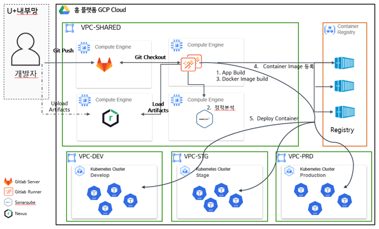
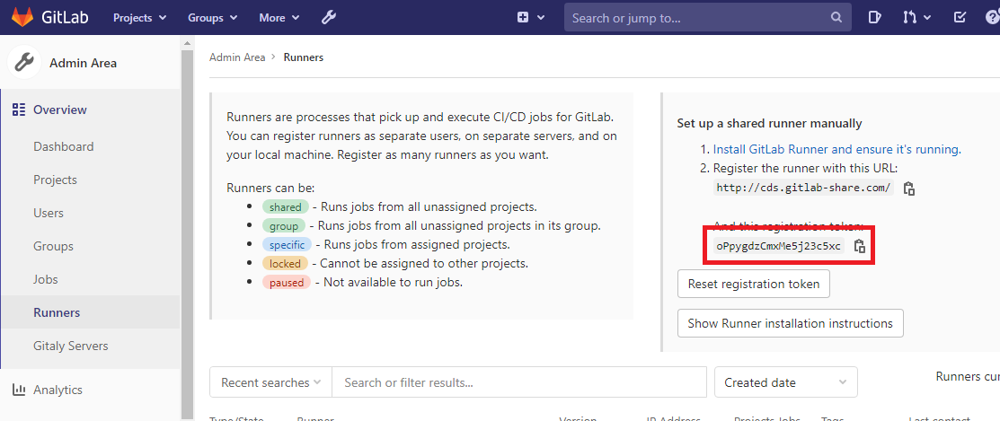

1. Gitlab/Gitlab-Runner
목차
1. 솔루션 선정
형상관리서버
- Gitlab 선정: Git 기반의 자체구축관리의 무료 버전
CI 도구선정
-
Gitlab-Runner선정의 이유(Jenkins를 선정하지 않은 이유)
A. 단일어플리케이션 이점: 동일 호스트를 사용하면서 가시성이 높음- 전체 개발 단계에서 일관된 UI제공
- 여러 어플리케이션 로그인 사용불편제거
- 설치 및 백업 등 유지관리가 용이함.\
B. Plugin 등이 전혀 필요없음
- Jenkins의 Plugin 충돌 경험
C. Code Review, Merge Request 등 협업 기능을 지원한다.
- Gitlab이 내세우는 10가지 장점 (1. 핸드오프 감소, 2. 개발 속도 향상, 3. 더 많은 배포, 4. 더욱 빠른 테스트, 5. 버그 감소, 6. 컴플라이언스 향상, 7. 혁신에 더 많은 시간 투자, 8. 개발자들의 높은 만족감, 9. 오버헤드 비용 절감, 10. 일관된 프로세스)
2. Gitlab 설치
구성요소 및 도구
| 구성요소 | 설명 | Remark |
|---|---|---|
| Gitlab 서버 | 소스 형상 관리 | gitlab-ee (ee의 무료버전) |
| Gitlab-Runner | 소스 배포에 따른 자동 및 수동 빌드 프로세스 진행 | Gitlab 와 분리 설치 |
| Nexus | Maven Repository 관리 | settings.xml 파일에 설정 |
| Sonarqube | 정적 분석 도구 | |
| K8S Kubectl | kubernetes 클라이언트 | Kubernetes cluster에 배포 작업 |
| Maven | v3.6.3 | Maven 빌드 |
| Node.js | v14.5 | Vuejs 빌드 및 실행 환경 |
| NPM | v6.14 | Vuejs 빌드를 위한 Node Package Manager |
| Registry | GCR(GCP), ECR(AWS) | 프로젝트 빌드 이미지를 환경별 저장 |
CI/CD 구성도
 Fig. 1-1. CI/CD 구성요소 개념도
- CI/CD는 Shared 영역에 구성되어서, [개발, 스테이지, 운영환경]에 배포
- 개발자PC에서 개발 환경을 구성하여 개발을 진행 개발된 변경 내용을 로컬 Reop에 Commit -> Gitlab 서버에push -> Gitlab 서버는 Gitlab-Runner를 이용하여 develop, stage/product 환경에서 Build -> Docker 패키징 및 Deploy를 진행
설치전에…
- Omnibus / Installation 또는 Docker(Kubernetes) or Not
- Omnibus 방식으로 VM에 설치(GitLab Self-Managed) 를 선택했음.
- 볼륨 위치는 후에 수정 가능(프로젝트 진행 중에 수정하는 것은 시스템 중지등이 발생시 좋지않음) :
생성 시 데이터,로그분리를 위해 S3등을 제공받아 /var/opt/gitlab, /var/log/gitlab 경로를 링크 설정하는 것을 추천
- 설치할 VM요청: VM 인스턴스 생성작업 및 그와 관련된 LoadBalancer, SecurityGroup 생성 등의 일련의 작업 진행을 통해 설치할 VM과 네크워크를 제공받음.
- Gitlab-ee 버전을 사용(설치 버전: 13.3.2-ee)
- EE 버전은 현재 2021년 1월에 FREE, PREMIUM, ULTIMATUM 세가지 버전으로 개편
- FREE 버전은 기존의 Gitlab-ce 와 동일한 기능(core 기능)을 비용없이 사용가능
- PREMIUM, ULTIMATUM등으로 업그레이드시 재 설치 없이 간단한 조작으로 변경 가능 * Gitlab-ce는 재 설치 해야함 *
설치(Omnibus 방식)
- Gitlab 패키지 레파지토리 등록
$ curl https://packages.gitlab.com/install/repositories/gitlab/gitlab-ee/script.rpm.sh | sudo bash
- Gitlab 설치
$ sudo EXTERNAL_URL="http://gitlab.dev.xxxxx.com" yum install -y gitlab-ee
- External_url 은 접속 URL 이므로 IP, URL이 변경시 수정한다.(gitlab-runner 가 바라보는 url(ip) 이 주소로 clone을 통해서 소스를 내려받아 job을 진행)
- Gitlab 환경설정: 설치 시에 EXTERNAL_URL 미 설정시 gitlab.rb 파일을 직접 수정가능
$ sudo vi /etc/gitlab/gitlab.rb
$ sudo gitlab-ctl reconfigure
$ sudo gitlab-ctl restart
- gitlab.rb 파일 수정 시 reconfigure 명령을 통해 반영하고 재시작한다.
Gitlab 데이터 볼륨 설정
생성 시 데이터,로그분리를 위해 S3등을 제공받아 /var/opt/gitlab, /var/log/gitlab 경로를 링크 설정하는 것을 추천
- 설정의 예시: 설치 후 Disk 공간을 분리시 다음과 같은 방법으로 진행할 수 있다.
- 모든 설정은 /etc/gitlab/gitlab.rb 파일에서 설정한다.
# git data 저장소 변경 (/data001/gitlab/git-data)
$ sudo vi /etc/gitlab/gitlab.rb
git_data_dirs({
# "default" => { "path" => "/var/opt/gitlab/git-data" },
"default" => { "path" => "/data001/gitlab/git-data" },
})
# artifacts path 변경: artifacts.zip, job.log 파일(/data001/gitlab/gitlab-rails/shared/artifacts)
$ sudo vi /etc/gitlab/gitlab.rb
gitlab_rails['artifacts_path'] = "/var/opt/gitlab/gitlab-rails/shared/artifacts"
- log directory는 다수의 모듈에 대한 로그 위치를 바꾸는 설정이 필요함
- gitlab에서 현재 사용중인 모듈들의 로그 위치를 변경해준다. 18개의 모듈에 대해서 로그가 생성되었고, 다음과 같다. [gitlab_rails, registry, gitlab_workhorse, puma, sidekiq, gitlab_shell, postgresql, redis, nginx, logrotate, prometheus, alertmanager, node_exporter, redis_exporter, postgres_exporter, gitlab_exporter , grafana, gitaly]
[Gitlab 서버 동작확인]
 Fig. 2-1. Password 설정
Fig. 2-1. Password 설정
- Admin Password 설정 최초 Password 설정 후 admin 계정인 root/[설정한 Password] 로 접속한다.
3. Gitlab-Runner 연동
- Gitlab 서버에 배포되는 소스를 빌드/배포하기 위한 파이프라인 구성.
- Job의 실행 방식(Executor)는: Docker
선행작업
[Docker 설치]
- Gitlab-Runner의 Docker 실행방식 사용: Pipeline(Job)를 실행하기 위해 local에 설치된 Docker Daemon을 공유.
[gitlab~]$ sudo yum install docker -y
[gitlab~]$ sudo service docker start # 서비스 시작
[gitlab~]$ sudo systemctl enable docker # 서비스 등록, 시스템 시작 시 자동실행
[gitlab~]$ sudo systemctl start docker
Gitlab-Runner 설치 및 연동
- Gitlab-Runner 패키지 등록
$ curl -L https://packages.gitlab.com/install/repositories/runner/gitlab-runner/script.rpm.sh | sudo bash
- Gitlab-Runner 설치
$ sudo yum install -y gitlab-runner
- Gitlab-Runner 등록 등록을 위한 Gitlab 서버의 URL 및 Token 값 필요 (Admin page의 Overview -> Runners 메뉴 선택)
 Fig. 2-2. Runner 등록
# Gitlab Runner 등록
$ sudo gitlab-runner register
# Gitlab 서버 주소를 입력
Please enter the gitlab-ci coordinator URL (e.g. https://gitlab.com/):
http:// gitlab.dev.xxxxx.com/
- Gitlab 서버와 Gitlab-Runner 가 같은 VPC 내에 설치되어 있으므로 gitlab의 내부 IP를 입력한다. (git clone 때 사용)
# Gitlab CI에서 발급된 Token 값을 입력한다.(Gitlab> Admin Runner 페이지)
Please enter the gitlab-ci token for this runner:
ZqRyzRQqP2Uj_uRG2sqd
# Runner에 대한 설명을 작성한다.
Please enter the gitlab-ci description for this runner:
CICD runner
# Executor를 선택한다. (https://docs.gitlab.com/runner/executors/#i-am-not-sure)
Please enter the executor: docker, docker-ssh, parallels, shell, ssh, docker-ssh+machine, kubernetes, custom, virtualbox, docker+machine:
docker
- Executor로 docker를 입력하여 소스 변경 등의 Trigger가 발생할 경우 Runner에 의해 docker를 이용한 Pipeline이 실행된다
# Dokcer image를 선택
Please enter the default Docker image (e.g. ruby:2.6):
docker:19.03.6-ce
- Runner를 식별할 Tag 값을 입력한다. (Tag 설정 무시 옵션이 체크 안된 경우 해당 Tag 값이 없는 Pipeline의 Job은 실행되지 않음.)
Please enter the gitlab-ci tags for this runner (comma separated):
docker, aws
- 자동으로 설정이 반영되어 재 시작되나, 확인을 위해 Gitlab-Runner를 재 실행한다.
$ sudo gitlab-runner restart
- Gitlab Admin page의 Overview의 Runner 메뉴에서 등록된 Runner를 확인.(1~2분 걸림)
Gitlab-Runner 추가 설정
Gitlab-Runner를 통한 프로젝트에 맞게 파이프라인 실행을 위한 추가 설정이 필요하다.
-
Tag 설정 없이 실행: Admin Area>Overview>Runners 에서 해당 Runner를 선택한 후 아래와 같이 Run untagged jobs 항목을 체크 후 저장한다.
-
volumes 설정: docker socket 공유, maven .m2
$ sudo vi /etc/gitlab-runner/config.toml
volumes = ["/var/run/docker.sock:/var/run/docker.sock", "/cache", "/home/gitlab-runner/.m2:/root/.m2"]
- Maven 프로젝트는 모두 settings.xml 파일 위치가 동일: Nexus URL 공유 /home/gitlab-runner/.m2 폴더 생성 후 .m2 폴더 아래 settings.xml 파일 생성
Gitlab 변수 설정
-
Gitlab은 정의된 변수들(Predefined Variables) 외에 반복 사용되는 값들을 변수 설정하여 스크립트를 간략하게 작성함.
-
Gitlab의 Admin Area>Settings>CI/CD>Variables에서 추가
변수 값들은 Default 설정으로 Protected(develop, master) 브랜치에서 적용 -
빌드 시 해당 설정된 변수를 찾지 못하는 오류 발생의 경우 해당 브랜치가 protected 설정에서 제외된 경우를 확인한다.
-
Variables
- 프로젝트 내에서 다른 프로젝트의 소스를 clone 위한 인증을 위한 ACCESS 값 필요
ACCESS_TOKEN: 사용자 계정에서 생성한 Token 값
- develop, master 브랜치를 이용시 동일 스크립트를 사용해 처리하기 위해 변수명이 CLUSTER_develop/_master, GCP_PROJECT_develop/_master 형식으로 사용함
CLUSTER_develop: GCP 쿠버네티스 개발 클러스터 명
CLUSTER_master: GCP 쿠버네티스 스테이지 클러스터 명
CLUSTER_PRD: GCP 쿠버네티스 운영 클러스터 명GCP_PROJECT_develop: 개발 프로젝트 ID
GCP_PROJECT_master: 스테이지 프로젝트 ID
GCP_PROJECT_PRD_ID: 운영 프로젝트 ID- soanrqube 실패에 따른 파이프라인 중지여부
SONAR_ON_FAIL: (false: 실패시 멈춤, true: 실패여부에 상관없이 파이프 라인 진행)
4. 프로젝트 추가
- 프로젝트에 대한 대상 소스 관리를 위한 서비스에 대한 프로젝트를 추가
- 그룹생성 후 그룹 별 서비스에 대한 프로젝트를 생성하면 관리에 용이함
- 그룹 생성 과 프로젝트 생성: 좌측 탭 메뉴에 그룹을 선택 후 생성할 수 있다.